Steward
分享是一種喜悅、更是一種幸福
掌機 - Gaviar (小志掌機) - 移植OS-GUI
參考資訊：
https://buildroot.org/
司徒接著說明一下移植系統UI這個部份，一般市面上常見的UI包含：LVGL、Funkey-OS、Onion等，這些UI都是屬於頂層應用程式，使用的元件都是基於Buildroot建構出來，而Buildroot是一套用來建制精簡Linux系統的工具，因此，移植系統UI指的就是將這些UI重新編譯並且跑在我們期望的平台上，因為某些UI會針對不同晶片或者Kernel做客製化，因此，這部份需要先找出來並且修改成我們想要的樣子，這些層級關係，司徒整理成如下圖片
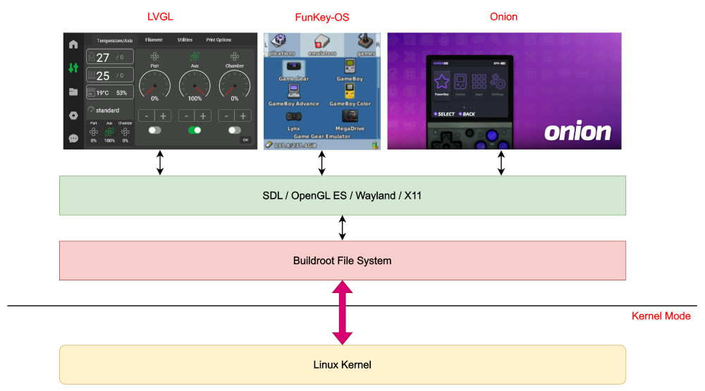
那問題來了，Kernel究竟是如何載入Buildroot File System(rootfs)並且跑起來的呢？一般作法是將rootfs放到一個磁區，例如：Partition 2，然後在Kernel的啟動參數裡面，描述rootfs位於何處以及磁區的類別是什麼，例如：ext4，然後說明第一個init程式位於何處，所以當Kernel開始執行時，MMC驅動程式就會負責偵測SD卡，然後FileSystem驅動程式負責磁區的識別，最後Kernel會執行init程式，整個過程如下圖所示：
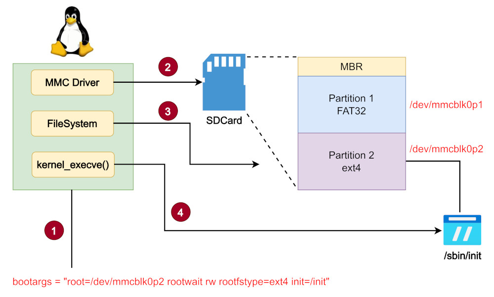
Buildroot
$ cd $ wget https://buildroot.org/downloads/buildroot-2026.08.tar.gz $ tar xvf buildroot-2026.08.tar.gz $ cd buildroot-2026.08 $ make menuconfig
RISC-V
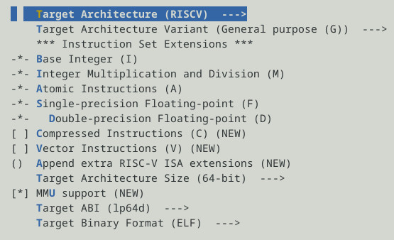
glibc、kernel、C++
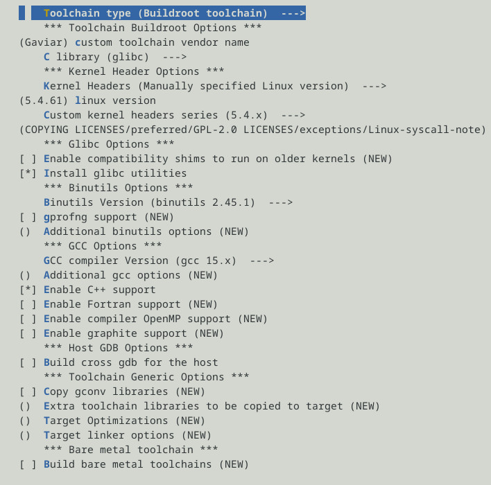
/opt/gaviar
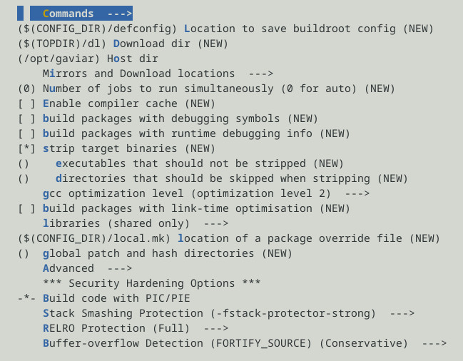
hostname
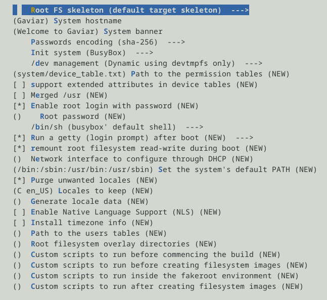
SDL
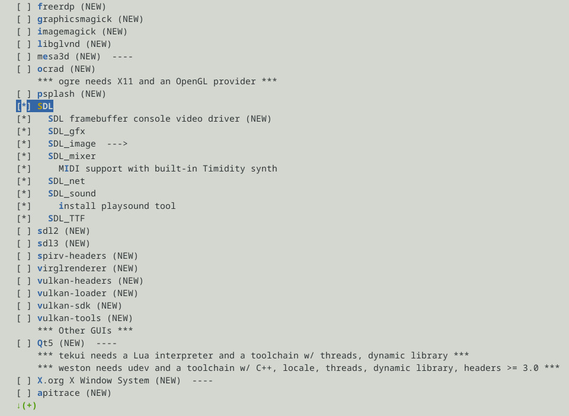
squashfs、tar
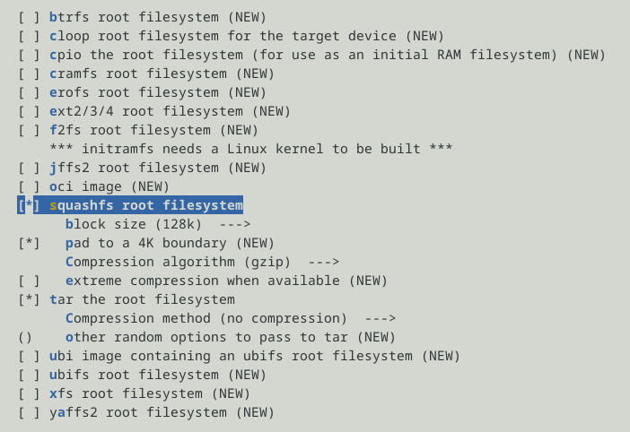
編譯
$ make
SDCard
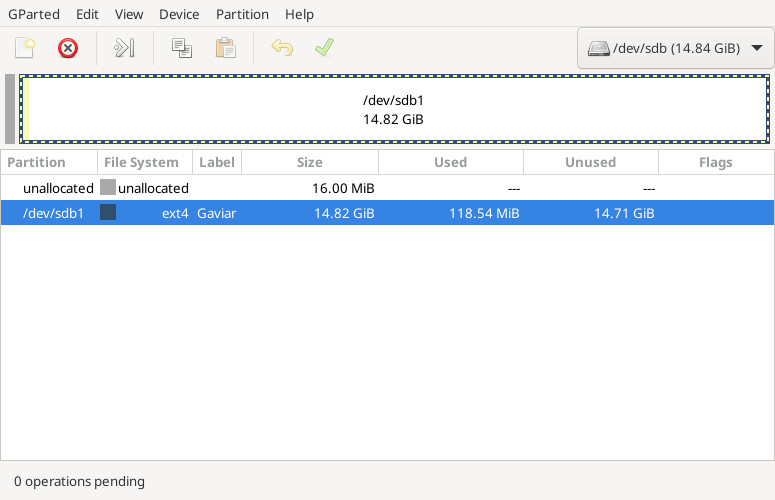
描述開機磁區位置以及磁區類型
bootargs = "console=ttyS4,115200n8 console=tty ignore_loglevel loglevel=8 root=/dev/mmcblk0p1 rootwait rw rootfstype=ext4 init=/sbin/init";
將output/images/rootfs.tar解壓縮到第一磁區，開機後就可以看到Welcome to Gaviar
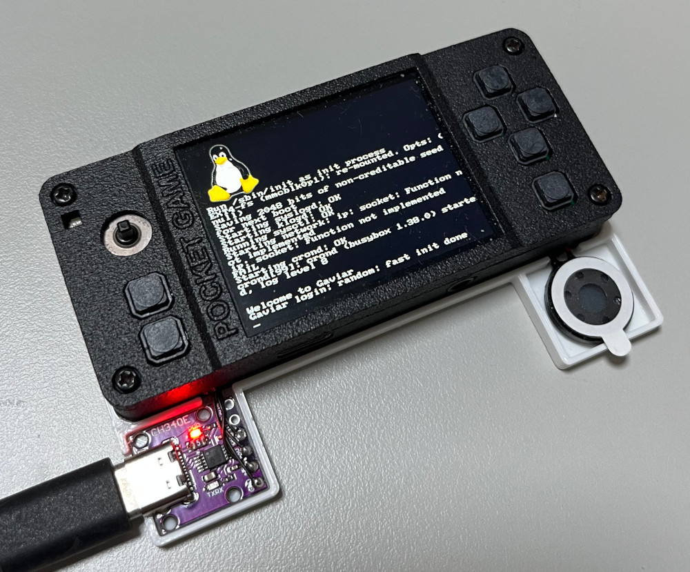
接著我們來寫一個測試的UI應用程式試試，程式碼如下：
#include <stdio.h>
#include <stdlib.h>
#include <SDL.h>
int main(int argc, char **argv)
{
SDL_Rect rt = { 0 };
SDL_Surface *screen = NULL;
SDL_Init(SDL_INIT_VIDEO);
screen = SDL_SetVideoMode(320, 240, 16, SDL_SWSURFACE);
SDL_FillRect(screen, &screen->clip_rect, SDL_MapRGB(screen->format, 0xff, 0x00, 0x00));
SDL_ShowCursor(0);
rt.x = 50;
rt.y = 50;
rt.w = 30;
rt.h = 30;
SDL_FillRect(screen, &rt, SDL_MapRGB(screen->format, 0x00, 0xff, 0x00));
rt.x = 100;
rt.y = 100;
rt.w = 50;
rt.h = 100;
SDL_FillRect(screen, &rt, SDL_MapRGB(screen->format, 0x00, 0x00, 0xff));
SDL_Flip(screen);
SDL_Delay(30000);
SDL_Quit();
return 0;
}
編譯(使用Buildroot編譯出來的編譯器)
$ /opt/gaviar/bin/riscv64-linux-gcc main.c -o main -I/opt/gaviar/riscv64-Gaviar-linux-gnu/sysroot/usr/include/SDL -lSDL
設定開機啟動這個UI應用程式，在SDCard裡面的/etc/init.d/rcS，附加如下指令並且將編譯後的main複製到SDCard的/bin資料夾底下
SDL_NOMOUSE=1 SDL_VIDEODRIVER=fbcon /bin/main
開機後，就會顯示測試程式的UI畫面
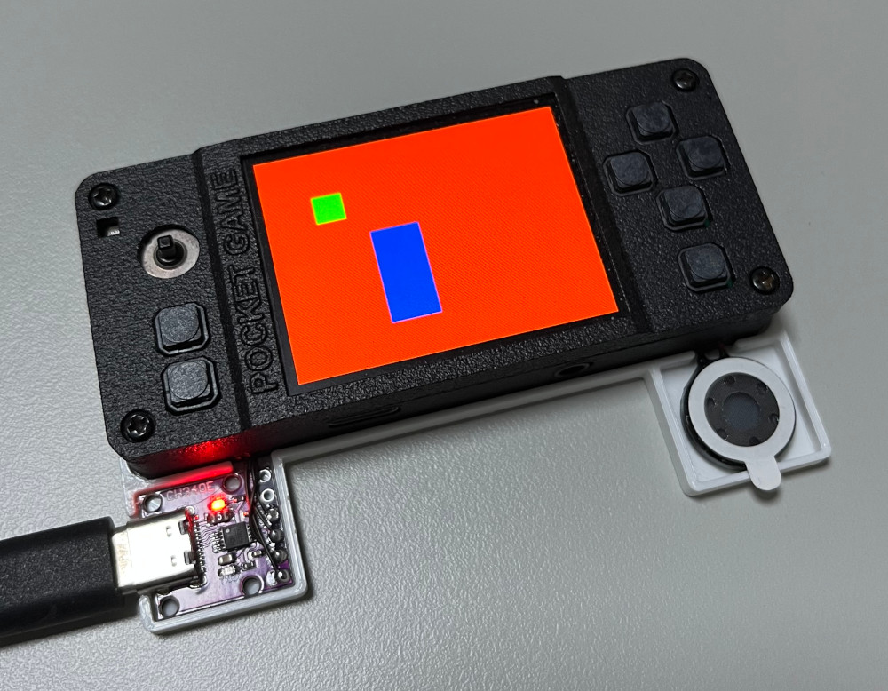
P.S. 之後如果有時間移植LVGL、Funkey-OS或者Onion，他們就是這個UI應用程式角色